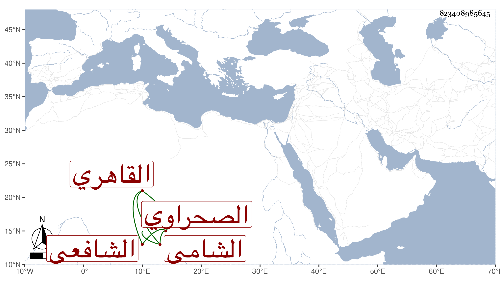

0902Sakhawi.DawLamic.ITO20230111-ara1.EIS1600.823408985645
Biography ID: 823408985645
إبراهيم بن علي بن محمد بن عيسى البرهان بن العلاء الشامي الأصل القاهري الصحراوي الشافعي الآتي أبوه ويعرف بالقطبي نسبة لأحد شيوخ والده . ولد تقريبا هو وأخوه محمد في بطن في المحرم سنة سبع عشرة وثمانمائة ومات والدهما سنة إحدى وثلاثين ونشأ فقرأ القرآن وقرأ على العز عبد السلام البغدادي في الملحة والعمدة وعلى الشمس الشيشيني والسيد النسابة في الفقه وعلى ثانيهما جل البخاري وتلا بالسبع أفرادا ثم جمعا ثم الثلاثة لتكملة العشرة على الزين جعفر السنهوري وقرأ علي في الهداية لابن الجزري وسمع مني القول البديع بعد أن حصله ولازمني في الأمالي وغيرها وكذا أخذ عن الكمال إمام الكاملية والزين زكريا في الفقه أيضا وغيره وقرأ على أبي حامد التلواني عمدة السالك لابن النقيب حلا وتنزل في صوفية سعيد السعداء وغيرها وحج غير مرة منها في سنة سبع وثمانين وقد كف وانقطع بالصحراء وربما دخل البلد لأخيه وكثيرا ما يجيء لزيارتي ونعم الرجل .
